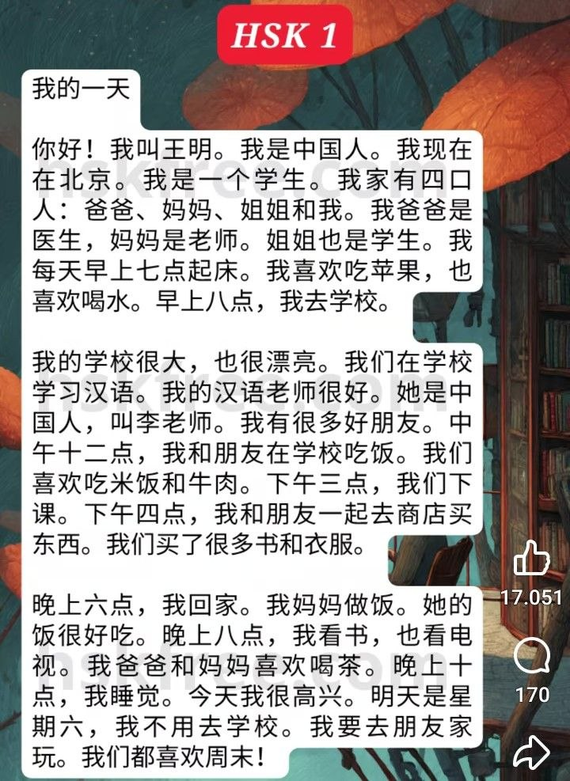

Ciao! Mi chiamo Wang Ming. Sono cinese. Ora mi trovo a Pechino. Sono uno studente. La mia famiglia è composta da quattro persone: papà, mamma, sorella maggiore e io. Mio papà è un medico, mia mamma è un'insegnante. Anche mia sorella è una studentessa.
Ogni mattina mi sveglio alle sette. Mi piace mangiare le mele e mi piace anche bere l'acqua. Alle otto del mattino vado a scuola.
La mia scuola è molto grande e anche molto bella. A scuola studiamo il cinese. La mia insegnante di cinese è bravissima. È cinese e si chiama Professoressa Li. Ho molti buoni amici.
A mezzogiorno (alle dodici), io e i miei amici mangiamo a scuola. Ci piace mangiare riso e carne di manzo. Le lezioni finiscono alle tre del pomeriggio. Alle quattro del pomeriggio, io e i miei amici andiamo insieme al negozio a fare acquisti. Abbiamo comprato molti libri e vestiti.
Alle sei di sera torno a casa. Mia mamma cucina. Il suo cibo è molto buono. Alle otto di sera leggo libri e guardo anche la TV. A mio papà e a mia mamma piace bere il tè. Alle dieci di sera vado a dormire.
Oggi sono molto felice. Domani è sabato, non devo andare a scuola. Andrò a giocare a casa di un amico. A tutti noi piace il fine settimana!